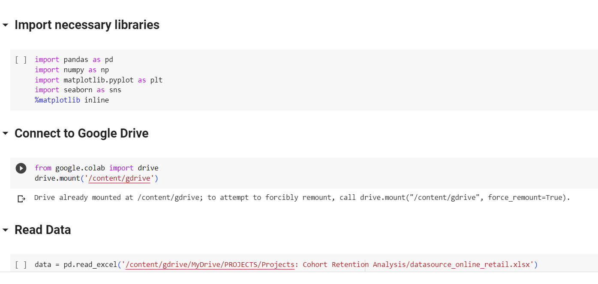

What is Cohort Analysis?
Cohort analysis is a type of behavioral analytics that takes data from a given dataset and rather than looking at all users as one unit, it breaks them into related groups for analysis. These related groups, or cohorts, usually share common characteristics or experiences within a defined time-span.
Cohort analysis allows a company to "see patterns clearly across the lifecycle of a customer (or user), rather than slicing across all customers blindly without accounting for the natural cycle that a customer undergoes." By seeing these patterns of time, a company can adapt and tailor its service to those specific cohorts.

The Data Sources
Data set which contains all the transactions for a UK online retail from "Online Retail"
File data with columns: InvoiceNo, StockCode, InvoiceDate, CustomerID,...
Access this link to Download data: Here
Download Dataset from website: Here
Or download dataset in my repository: Here
Data Cleaning with Python in Google Colab
Import neccessary libraries and read file:

Data overview:
Check duplicated Value
(by this Script)
# duplicated values check
data = data
data['dup_flag'] =
data.groupby(['InvoiceNo','StockCode','Quantity'])['InvoiceDate'].rank(method='first').astype(int)
duplicates = data[data['dup_flag'] > 1]
duplicates

UnitPrice less than 0
Quantity less than 0

Customer Null and 0
My Exploration
- Total Records: 541909 records.
- Total Columns: 8 columns.
- All columns with correct data type.
- There are 2 columns with null values: Description with 1454 and CustomerID with 135080 null values.
- There are 10624 records with Quantity less than 0.
- There are 2 records with Price less than 0.
- There are 135080 records with CustomerId equal 0 and Null values.
- There are 5431 records duplicated.
The Scripts of Cleaning
- Delete records with Quantity less than 0, UnitPrice less than 0, Customer ID equal to 0, and Customer ID with Null values.
- Delete duplicated records.
- Each StockCode will correspond to each individual Description. The null Description field may be due to a lack of input by the employee, so the Description can be filled in by checking the StockCode against the previous product.
Here is my code for cleaning in Python:
# Delete records with Quantity < 0
data = data[data['Quantity'] > 0]
# Delete records with Price < 0
data = data[data['UnitPrice'] > 0]
# Delete records with Customer ID = 0 or Customer ID is Null
data = data[(data['CustomerID'] != 0) & (data['CustomerID'].notnull())]
# Delete duplicated values
data['dup_flag'] = data.groupby(['InvoiceNo', 'StockCode', 'Quantity'])['InvoiceDate'].rank(method='first').astype(int)
data = data[data['dup_flag'] == 1]
# Drop column dup_flag
data = data.drop(columns=['dup_flag'])
# Create a dictionary that maps each StockCode to its corresponding Description
stockcode_to_description = data.dropna(subset=['Description']).drop_duplicates('StockCode').set_index('StockCode')['Description'].to_dict()
# Filling the missing values in Description
# Define a function to fill missing Description based on StockCode
def fill_missing_description(row):
if pd.isnull(row['Description']):
return stockcode_to_description.get(row['StockCode'], None)
else:
return row['Description']
# Apply the function to the 'Description' column
data['Description'] = data.apply(fill_missing_description, axis=1)
Data After Clean (with 392668 Records)
(Save it to new files)
Download the Data After Cleaning: Here
SQL Script - Customer Cohort Analysis (Time - Based)
SELECT *
FROM datasource_online_retail_clean AS d
--------------BEGIN COHORT ANALYSIS----------------------------
---Data Required:
--Unique Identifier (CustomerID)
--Initial Start Date (First Invoice Date)
--Revenue Data (Quantity*UnitPrice)
SELECT CustomerID,
MIN(InvoiceDate) AS First_purchase_date,
DATEFROMPARTS(YEAR(MIN(InvoiceDate)), MONTH(MIN(InvoiceDate)),1) AS Cohort_Date
into #cohort
FROM datasource_online_retail_clean
GROUP BY CustomerID
--Create Cohort index
SELECT
mm.*,
cohort_index = Year_diff*12+Month_diff+1
INTO #cohort_retention
FROM
(
SELECT
m.*,
Year_diff = InvoiceYear - CohortYear,
Month_diff = InvoiceMonth - CohortMonth
FROM
(
SELECT d.*, c.Cohort_Date,
YEAR(d.InvoiceDate) AS InvoiceYear,
MONTH(d.InvoiceDate) AS InvoiceMonth,
YEAR(c.Cohort_Date) AS CohortYear,
MONTH(c.Cohort_Date) AS CohortMonth
FROM datasource_online_retail_clean AS d
LEFT JOIN #cohort AS c
ON c.CustomerID = d.CustomerID
) AS m
) AS mm
--WHERE CustomerID = 18168
---cohort_retention.csv table--
SELECT *
FROM #cohort_retention
--
--Pivot Data to see the cohort table
SELECT
*
INTO #cohort_pivot
FROM
(
SELECT DISTINCT
CustomerID,
Cohort_Date,
cohort_index
FROM #cohort_retention
) AS TBL
PIVOT(
COUNT(CustomerID)
FOR Cohort_Index In
(
[1],
[2],
[3],
[4],
[5],
[6],
[7],
[8],
[9],
[10],
[11],
[12],
[13]
)
) AS Pivot_Table
ORDER BY Cohort_Date
--Cohort_table_count
SELECT *
FROM #cohort_pivot
ORDER BY Cohort_Date
--Cohort_table_percentage
select Cohort_Date ,
(1.0 * [1]/[1] * 100) as [1],
1.0 * [2]/[1] * 100 as [2],
1.0 * [3]/[1] * 100 as [3],
1.0 * [4]/[1] * 100 as [4],
1.0 * [5]/[1] * 100 as [5],
1.0 * [6]/[1] * 100 as [6],
1.0 * [7]/[1] * 100 as [7],
1.0 * [8]/[1] * 100 as [8],
1.0 * [9]/[1] * 100 as [9],
1.0 * [10]/[1] * 100 as [10],
1.0 * [11]/[1] * 100 as [11],
1.0 * [12]/[1] * 100 as [12],
1.0 * [13]/[1] * 100 as [13]
FROM #cohort_pivot
ORDER BY Cohort_Date
In this script, I created some CTE (Common Table Expression):
- 1. cohort: store CustomerID, their First purchase date, and the Cohort Date.
- First purchase date: using MIN(InvoiceDate) to Calculate the first purchase day of each customer.
- Cohort Date: using DATEFROMPARTS(YEAR(MIN(InvoiceDate)), MONTH(MIN(InvoiceDate)),1) group the data into cohorts based on the month of the first purchase for each customer.
- 2. cohort_retention: calculates the Year_diff and Month_diff for each row. These values represent the difference in years and months between the InvoiceDate and the Cohort_Date.
- 3. cohort_pivot: perform PIVOT data and create the cohort_table_count to display the number of customers in each cohort over time.
- 4. cohort_table_percentage: to calculate the percentage of customers in each cohort over time .
After that, I loaded this SQL Scripts to Power BI to visualize.
Customer Cohort Analysis Dashboard
Download the dashboard: Here
Customer Characteristics:
- The first cohort (2010-12-01) had 885 customers. The number of customers decreases from the following months.
- Cohorts from 2011-02-01 to 2011-08-01 had relatively stable customer counts, ranging from 71 to 169 customers.
Customer Retention Rate:
- The cohort of 2010-12-01 retained a large number of customers over time, maintaining over 200 customers after 13 months.
- Cohorts from 2011-01-01 to 2011-06-01 had a relatively good customer retention rate, reaching around 10-15% after 13 months. However, the customer retention rate of cohorts after 2011-06-01 decreased significantly.
Identified Issues:
It is evident that cohorts after 2011-06-01 all experienced a significant decline in customer count in the following months. This indicates an issue with customer retention, and it is necessary to identify the root cause and find solutions to enhance customer loyalty.
Effectiveness of Marketing Strategies And Propose Solutions:
- The cohort of December 2010 had a large initial customer count and retained a considerable number of customers over time. This indicates that the marketing and customer retention strategies during this period were effective.
Proposal: Continue developing and maintaining the effective marketing strategies implemented during this period to continue attracting and retaining customers.
- Cohorts after January 2011 all had a low initial customer count and tended to decrease over time. This suggests an issue with customer retention, and it is necessary to identify the root cause and find solutions to enhance customer loyalty.
Proposal: Research and analyze the reasons for the decline in customer counts in these cohorts. It may be necessary to strengthen customer care services, improve the shopping experience, and offer attractive promotions and incentives to retain customers.
- Cohorts from January 2011 to June 2011 had a low initial customer count but relatively good customer retention rates.
Proposal: Focus on these cohorts and develop marketing strategies based on this potential customer group. Enhance communication and interaction with customers in this group, offer attractive promotions and incentives to attract their interest and strengthen customer loyalty.
In conclusion, the cohort table clearly shows the variation in customer counts within each cohort over time and provides crucial insights into the characteristics and effectiveness of marketing and advertising strategies of the business. Based on this analysis, business can propose adjustments and enhancements to improve business efficiency and strengthen customer loyalty.
View my full project: Here
Visits my social profile and get connected: